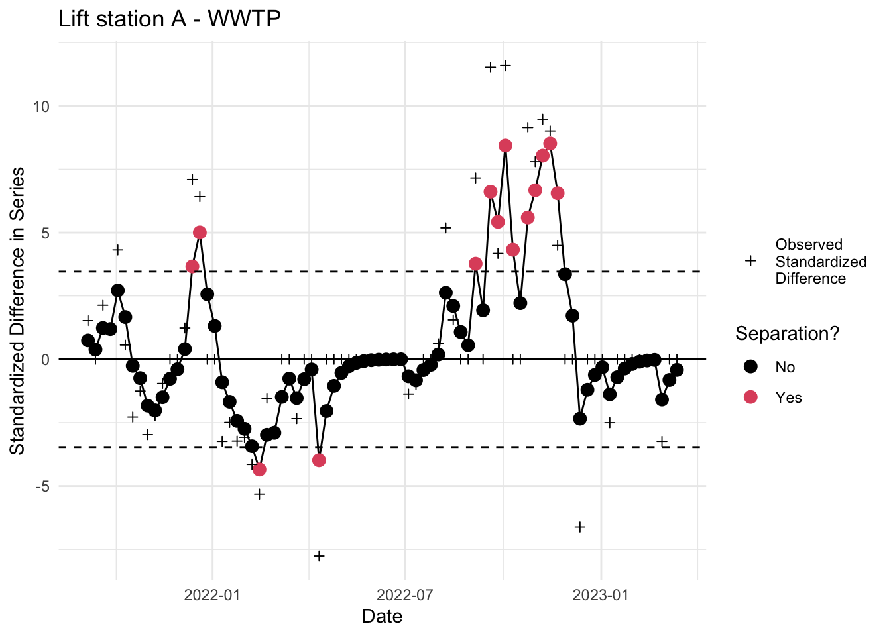
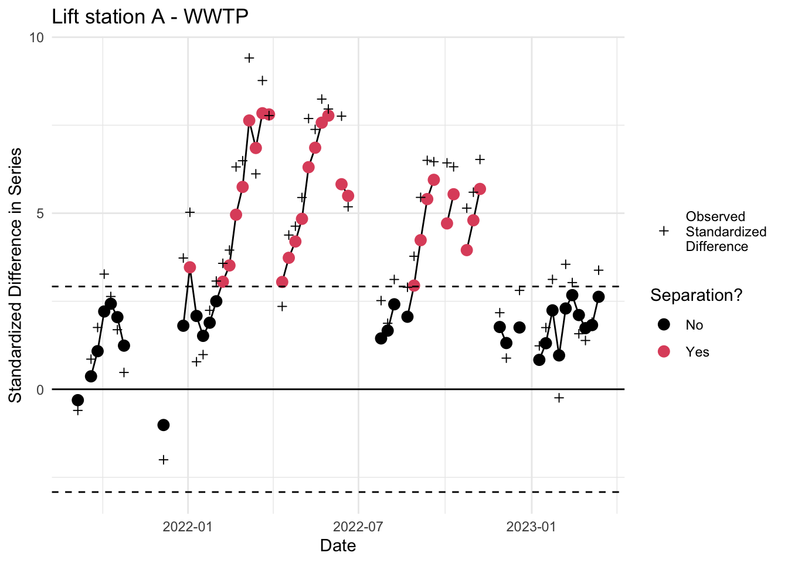
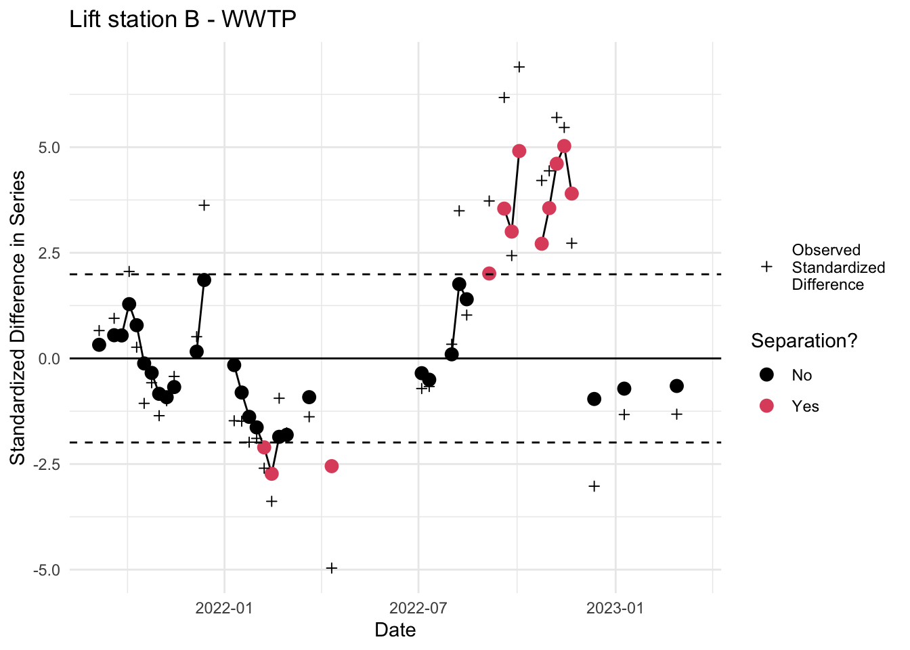
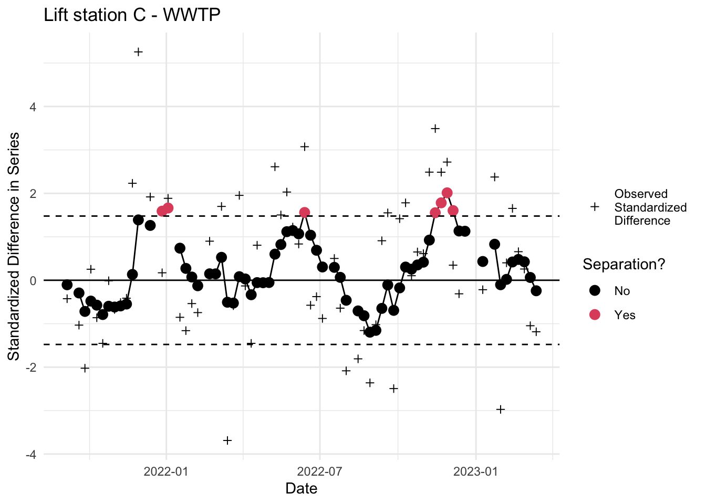
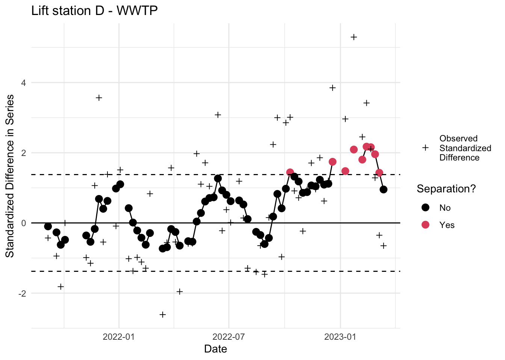

library(tidyverse)
library(qcc)
library(ggnewscale)
load("Data/fits_rolling_KFAS")1. Obtain trend estimates
At least 10 + \(n\) WWTP observations, \(n \geq 1\) sub-sewershed observations
Read in cleaned WWTP series and obtain online trend estimates through the date of the first sub-sewershed observation. For this tutorial, we will read in the fitted value object from Algorithm 1, since it contains the observed and fitted values for all series. The algorithm is demonstrated with the Lift station B series compared to the online estimates of the WWTP. Results for all 4 lift station comparisons are at the end.
2. Handle missing data in LS series
Replace any missing sub-sewershed observations with WWTP online trend estimate for corresponding date.
# Subset to WWTP
mu_t <- fits_rolling_KFAS$`WWTP` %>% dplyr::filter(date> "2021-08-30"& fit == "filter")
# Observed LS series and dates
y_t_all <- fits_rolling_KFAS$`Lift station B` %>% dplyr::filter(date> "2021-08-30" & fit == "filter")
#Replace missing values in lift station series
y_t_all[y_t_all$ts_missing, "obs"] <- dplyr::left_join(y_t_all[y_t_all$ts_missing,], mu_t, by = "date") %>% dplyr::pull(est.y)
# Keep just the series of observations and filled-in missing values
y_t <- y_t_all %>% dplyr::pull(obs)
# Just the online estimates for WWTP
mu_t <- fits_rolling_KFAS$`WWTP` %>% dplyr::filter(date> "2021-08-30"& fit == "filter") %>% dplyr::pull(est)3. Create difference time series
Create difference time series of sub-sewershed observed copies/liter (\(\log10\)) - WWTP Online Trend Estimate.
## compute the raw differences (numerator of d_tilde)
diff <- y_t-mu_t4. Standardize the difference series
Compute the (approximate) standard deviation of the q1. Standardize the difference series by dividing by the standard deviation.
var_y <- fits_rolling_KFAS$`Lift station B` %>%
dplyr::filter(date > "2021-08-30" & fit == "filter")%>%
dplyr::mutate(var_est = sigv^2) %>% select(var_est)
var_mu <- fits_rolling_KFAS$`WWTP` %>%
dplyr::filter(date > "2021-08-30" & fit == "filter") %>%
dplyr::mutate(var_est = ((upr-est)/2)^2) %>%
dplyr::select(var_est)
## compute the estimated covariance (scaled product of variances)
cor_estimate <- cor(y_t, mu_t, use ="pairwise.complete.obs")
cov_est <- as.numeric(cor_estimate)*sqrt(var_y$var_est)*sqrt(var_mu$var_est)
## compute approximate variance using covariance (this is the correct variance for the numerator of our equation)
var_est <- var_y$var_est + var_mu$var_est -2*cov_est
## standardize
standardized_diff <- diff/sqrt(var_est)5. Construct EWMA chart
Construct EWMA chart for the standardized difference series.
# compute lag 1 autocorrelation of standardized difference series
lag1_est <- acf(standardized_diff, plot=F, na.action = na.pass)$acf[2] ## we could do something fancier
# use qcc package to make ewma plot
out <- qcc::ewma(standardized_diff, center = 0, sd = 1,
lambda = lag1_est, nsigmas = 3, sizes = 1, plot = F)
## put NAs where we had missing values for either series
out$y[is.na(y_t)] <- NA
out$data[is.na(y_t),1]<- NA
dates <- dplyr::filter(fits_rolling_KFAS$WWTP,
date > "2021-08-30" & fit == "filter") %>% dplyr::pull(date)
# create plot
dat <- data.frame(x = dates,
ewma = out$y,
y = out$data[,1],
col = out$x %in% out$violations,
lwr = out$limits[20,1],
upr = out$limits[20,2])
obs_dat <- data.frame(x = dat$x, y = out$data[,1], col = "black")
p <- ggplot2::ggplot(dat, aes(x = x, y = ewma)) +
ggplot2::geom_vline(xintercept = NULL,
col = "darkgrey",
lwd = 1) +
ggplot2::geom_line()+
ggplot2::geom_point(aes(col = dat$col), size = 3) +
ggplot2::scale_color_manual(values = c(1,2), label = c("No", "Yes"), name = "Separation?") +
ggnewscale::new_scale_color() +
ggplot2::geom_point(data = obs_dat, aes(x = x, y = y, col =col), shape = 3) +
ggplot2::scale_color_manual(values = "black", label = "Observed \nStandardized \nDifference", name = "") +
ggplot2::geom_hline(aes(yintercept = out$limits[20,1]), lty = 2) +
ggplot2::geom_hline(aes(yintercept = out$limits[20,2]), lty = 2) +
ggplot2::geom_hline(aes(yintercept = 0), lty = 1) +
ggplot2::ggtitle("Lift station A - WWTP")+
ggplot2::xlab("Date") + ggplot2::ylab("Standardized Difference in Series") +
ggplot2::theme_minimal()
p

6. Inspect EWMA chart
Inspect EWMA chart for separation. Red dots outside the dotted lines indicate a statistically significant deviation. Note that all the above code can be run by calling the custom ww_ewma.r function.
source("Code/ww_ewma.r")
mu2 <- fits_rolling_KFAS$`WWTP` %>% dplyr::filter(fit == "filter" & date > "2021-08-30")
ewma_plots <- fits_rolling_KFAS %>% dplyr::bind_rows() %>%
dplyr::filter(name != "WWTP" & fit == "filter" & date > "2021-08-30") %>%
dplyr::group_nest(name, keep = T) %>%
tibble::deframe() %>%
purrr::map(., ~ {
ww_ewma(.x, mu2, paste(.x$name[1], "-", mu2$name[1]))
})



